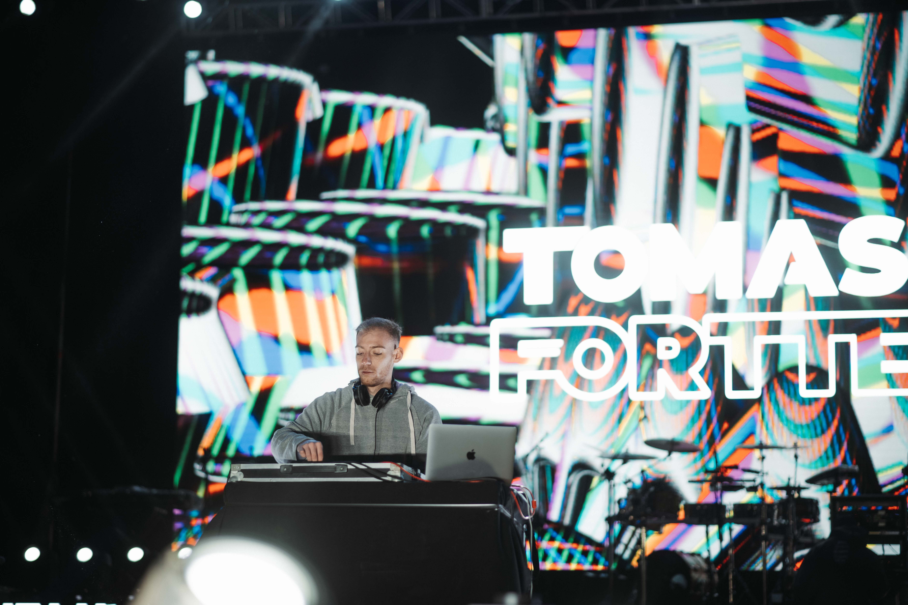

DJ
TOMAS FORTTE
Open Format
BIOGRAFÍA
DJ originario de Mendoza, Argentina. Con un estilo principalmente cachengue con una fusión de pop comercial, Tomás ha logrado conquistar las pistas de baile en boliches, festivales y todo tipo de eventos sociales —desde casamientos, cumpleaños de 15, egresados, hasta eventos empresariales— creando siempre una atmósfera festiva, vibrante y memorable. Su versatilidad y presencia en escena lo han llevado a destacarse en escenarios icónicos de Argentina, así como en presentaciones internacionales en Chile y Uruguay. Además, ha sido convocado como DJ de open show para reconocidos artistas como Q' Lokura, Diego Torres, Dame 5, Abel Pintos, L-Gante, Pijama Party entre otras bandas destacadas del circuito local.
Entre sus actuaciones más relevantes se destacan su participación en festivales de gran convocatoria como la "Vendimia de la Ciudad de Mendoza" y "Rivadavia le canta al País". En la escena local mantiene su actual residencia en Wabi Fun Club, además de presentaciones en espacios como Bosco Sunset, Black Jagger Club, Roble Wake Park Sunsets, Chirolas, Fronteo, Grita Silencio, etc. También ha formado parte de importantes fiestas y venues del país como Fiesta Plop! (Teatro Vorterix, Buenos Aires), Foret (Villa Mercedes, San Luis), Fiesta Puerca (Teatro Vorterix, Buenos Aires), Sky Club (San Luis), Comuna Club (San Luis) y Jungle (San Juan), junto a presentaciones internacionales en Sala del Museo (Montevideo, Uruguay), Hollywood (Viña del Mar, Chile) y LongBeach (Reñaca, Chile).




/ contacto /
Estamos para ayudarte y responder tus preguntas.
Teléfono +54 9 11 2519 4491
E-mail bookingbytoms@gmail.com
Rider técnico & Media
PRÓXIMAMENTE (solo para productores y diseñadores)